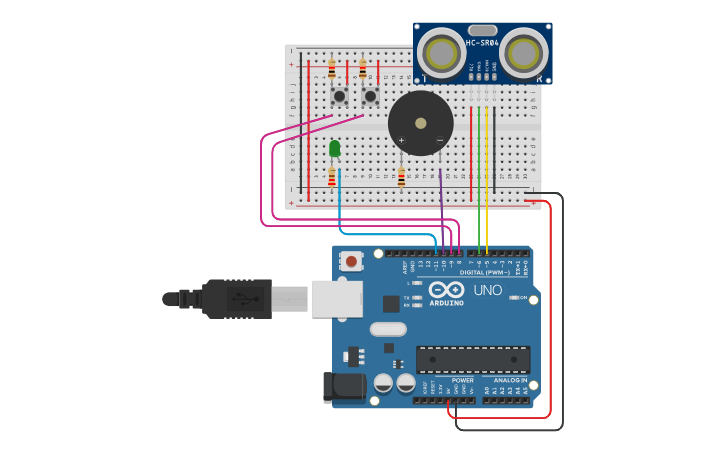

PROJECT 20: ADVANCED PARKING ASSISTANT
Distance System with Start/Stop Control
Mission Brief
This is the ultimate evolution of the parking sensor. Unlike previous versions that were always "on," this system features a control panel. You use one button to Start the system and another to Stop it. When active, it adjusts the LED brightness and Buzzer speed dynamically based on how close an object is.
Key Components
- Arduino Uno R3
- HC-SR04 Ultrasonic Sensor
- Piezo Buzzer
- LED (Green)
- 2x Push Buttons (Start & Stop)
- Resistors
- Jumper Wires
Circuit Diagram

Pin Connections
| Component | Arduino Pin |
|---|---|
| Sensor Echo | Pin 5 |
| Sensor Trig | Pin 6 |
| OFF Button (Stop) | Pin 8 |
| ON Button (Start) | Pin 9 |
| Buzzer (+) | Pin 10 |
| LED (+) | Pin 11 (PWM) |
Step-by-Step Instructions
- Sensor: Connect Trig to Pin 6 and Echo to Pin 5. Connect VCC to 5V and GND to GND.
- Buttons: Place two buttons. Connect one leg of each to 5V.
- Connect the other leg of the Left Button to Pin 8 (and to GND via a 10k resistor).
- Connect the other leg of the Right Button to Pin 9 (and to GND via a 10k resistor).
- Connect the Buzzer (+) to Pin 10 and (-) to GND.
- Connect the LED Anode (long leg) to Pin 11 via a resistor, and Cathode to GND.
Arduino Code
/* Project 20 - Advanced Parking System
* Control Panel: Pin 9 starts the system, Pin 8 stops it.
* Feedback: Adjusts LED brightness and Buzzer speed based on distance.
*/
const int echoPin = 5; // Echo pin connected to Pin 5
const int triggerPin = 6; // Trigger pin connected to Pin 6
const int offPin = 8; // Power OFF button connected to Pin 8
const int onPin = 9; // Power ON button connected to Pin 9
const int buzzerPin = 10; // Buzzer connected to Pin 10
const int ledPin = 11; // LED (Brightness control) connected to Pin 11
int ledBrightness; // Variable for LED intensity (0..255)
long buzzerFreq; // Pitch of the sound
long buzzerDelay; // Speed of the beeping
bool systemStopped = true; // State variable: Is the system paused?
void setup() {
Serial.begin(9600); // Initialize Serial Monitor
pinMode(triggerPin, OUTPUT); // Trig sends sound
pinMode(echoPin, INPUT); // Echo receives sound
pinMode(ledPin, OUTPUT); // LED Output
pinMode(buzzerPin, OUTPUT); // Buzzer Output
pinMode(onPin, INPUT); // ON Button Input
pinMode(offPin, INPUT); // OFF Button Input
}
void loop() {
float duration, distanceCm;
// --- CONTROL PANEL LOGIC ---
// Check if user pressed ON
if(digitalRead(onPin) == HIGH){
systemStopped = false; // Activate system
}
// Check if user pressed OFF
if (digitalRead(offPin) == HIGH){
systemStopped = true; // Stop system
}
// --- SYSTEM LOGIC ---
if (systemStopped){
// If system is OFF:
Serial.println("System Stopped");
digitalWrite(ledPin, LOW); // Turn off LED
noTone(buzzerPin); // Silence Buzzer
}
else {
// If system is RUNNING:
// 1. Measure Distance
digitalWrite(triggerPin, LOW);
delayMicroseconds(4);
digitalWrite(triggerPin, HIGH); // Send pulse
delayMicroseconds(10);
digitalWrite(triggerPin, LOW);
duration = pulseIn(echoPin, HIGH); // Read echo time
distanceCm = (duration * 10) / (292 * 2); // Calculate cm
// Note: The math uses speed of sound (29.2 microseconds per cm) / 2 for round trip.
Serial.print("Distance: ");
Serial.print(distanceCm);
Serial.println(" cm");
// 2. Adjust LED Brightness
// Map distance (30cm-300cm) to Brightness (255-0)
// Closer = Brighter (255), Farther = Dimmer (0)
ledBrightness = map(distanceCm, 30, 300, 255, 0);
analogWrite(ledPin, ledBrightness);
Serial.print("LED Brightness: ");
Serial.println(ledBrightness);
// 3. Adjust Buzzer Tone
// Map distance to Frequency (30cm=330Hz, 300cm=30Hz)
buzzerFreq = map(distanceCm, 30, 300, 330, 30);
// 4. Adjust Beep Speed
// Map distance to Delay (30cm=200ms fast, 300cm=1300ms slow)
buzzerDelay = map(distanceCm, 30, 300, 200, 1300);
tone(buzzerPin, buzzerFreq, 200); // Play sound for 200ms
delay(buzzerDelay); // Wait based on distance
noTone(buzzerPin);
Serial.println("---");
}
}
How It Works
- The "Latch" Logic:
-
State Memory:
We use a boolean variable `systemStopped`. Even if you let go of the "ON" button, the variable stays `false`, so the system keeps running. It only changes when you press the "OFF" button. This mimics a real power switch using software! - The map() Function:
-
Dynamic Feedback:
Instead of just ON/OFF, we use `map()` to create a sliding scale.
Example: `map(distance, 30, 300, 255, 0)`
If distance is 30cm (Close), result is 255 (Max Brightness).
If distance is 300cm (Far), result is 0 (LED Off).
Expected Output
At Start: Nothing happens (System Stopped).
Press Button 9: The system wakes up. The LED glows and the buzzer beeps.
Move Closer: The LED gets brighter, the pitch gets higher, and the beeping gets faster.
Press Button 8: The system shuts down immediately.
What You Learned
- Creating a software-based ON/OFF latch.
- Using `analogWrite` (PWM) to fade LEDs based on sensor data.
- Mapping multiple variables (Light, Sound, Speed) to a single sensor input.
Next Steps / Extension Ideas
Try adding a "Mute" feature! Add a third button that, when held down, keeps the LED visual indicators working but silences the buzzer.